Scope
- Propulsion Lead and Propulsion Vice-Lead for Monash High Powered Rocketry (MHPR) over a two year span, managing a sub-team of 15-20 across engine design, manufacturing, testing and launch.
- Started as Propulsion Vice-Lead the first year, then became Lead for the second year when the engine flew on Project Zenith for the first time and then competed at IREC 2025 in Texas.
- First Australian team to launch a student built hybrid at competition, went on to win the Jim Furfaro Award for Technical Excellence from 140+ teams internationally, a first in Australian rocketry. During this competition I was in control for the entire rocket launch operations as the team's Launch Operations Lead.
- Contributed to the design and build the engine inclduing, tank bulkheads, SRAD pneumatic main valve, capacitive fill sensor, combustion chamber, injector and more.
- Led a hotfire test campaign across multiple engine iterations, refining ignition timings, fuel grain, reliability and performance from test data.
- Delivered a flight ready propulsion system integrated into Project Zenith for the team's 10,000 ft apogee competition rocket at IREC 2025.
Key Characteristics
Key metrics
Nitrous oxide oxidiser with a paraffin fuel grain in an ABS gyroid matrix. 4,000 N peak / 3,400 N average thrust, M3400 class motor.
SRAD pneumatic valve
Custom concentric pneumatic valve actuated by a pilot valve using nitrous tap off from tank, unequal-area piston stays sealed until the pilot valve vents the pressure on the underside of the piston. An extremely light weight and compact valve solution allowing high flowrates with a small actuator.
Flight performance
6 s total burn (3 s liquid + 3 s vapour), Mach 1.0 max velocity, coasting to 10,000 ft apogee under active air brake control. Flown successfully 3 times.
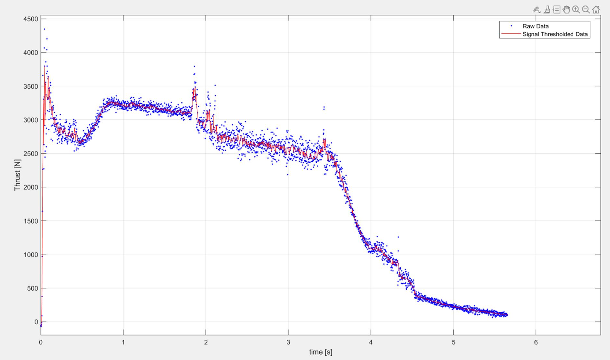
Thermodynamic modelling
I worked directly on the simulations for this engine using isentropic flow, vapour curves, non-homogenous equillibrium mass flow rate models and more to predict performance and inform design.

Hotfire campaign
Let a campaign of over 10 successful hotfires along with cold gas tests, and countless failures, learning a lot along the way.
Design Overview
Engine Overview
Solaris MkII uses nitrous oxide as the oxidiser with an paraffin wax fuel grain casted in a gyroid ABS matrix. Additionally it features a vortex swirl injector, custom SRAD valve and custom welded tanks which I contributed to the design for. The engine cross section shows the complete internal layout from the oxidiser tank interface through the main valve, injector, fuel grain, and nozzle.
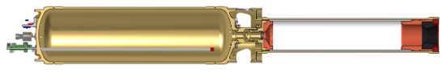
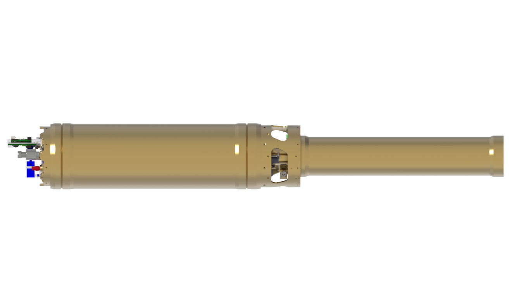
Engine cross-section
Cross-section of Solaris MkII with the full render below.
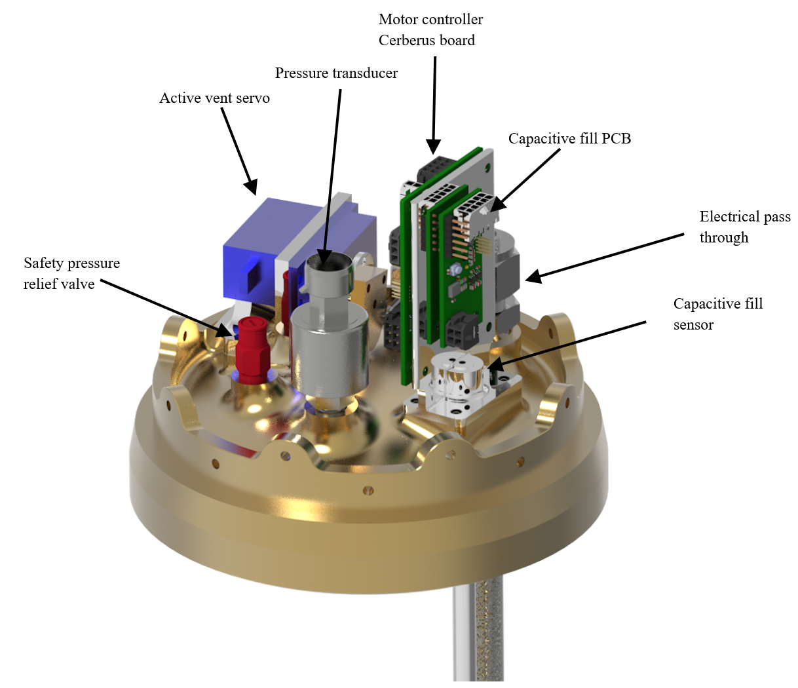
Top tank bulkhead
Upper tank bulkhead with 2:1 elliptical profile integrating active vent, capacitive fill sensor, pressure transducer and SPRV. Machined and designed by me.
Main oxidiser valve
The SRAD concentric pneumatic valve uses nitrous tap off to actuate an unequal area piston which is held closed by equal pressure until the pilot valve vents the pressure on the underside of the piston. The pilot valve is a three way piston valve driven by a DC motor via a lead screw, the profile of this system is incredibly compact and light for the flowrate and pressure it operates at.
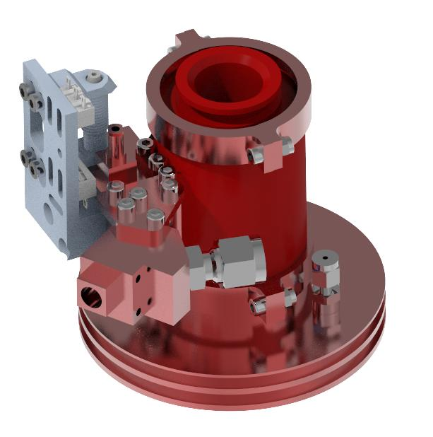
Valve assembly
External view showing pilot valve, collar, main valve body, quick disconnect box, and combustion chamber forward closure.
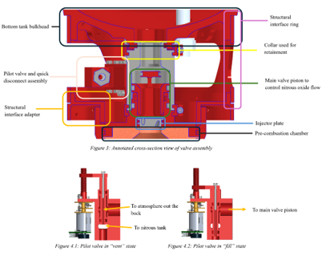
Annotated valve assembly
Detailed annotation of the main valve assembly highlighting the concentric piston, sealing surfaces and pilot valve actuation.
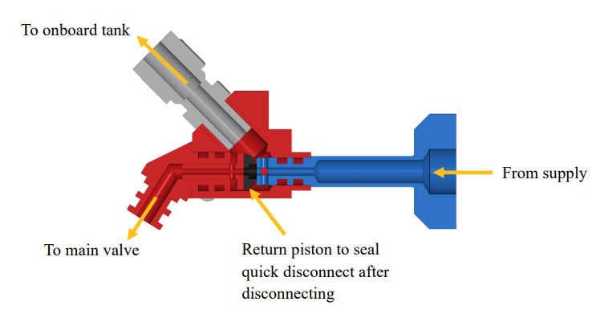
Quick disconnect
Quick disconnect interface between the ground support fill line and the onboard tank.
Fill system and capacitive fill sensor
The nitrous fill sequence is managed through an automated control system that handles dumping, filling and vent operations. This state machine balances inputs from the capacitive fill sensor, onboard pressure transducer and active vent position feedback to fill the tank to a precise mass and pressure prior to launch and hold it there. This allows us to get predictable engine performance and thus get as close as possible to our target apogee.
I personally developed the initial version of this state machine and design of the capacitive fill sensor in response to poor results from using a load cell on the launch rail.
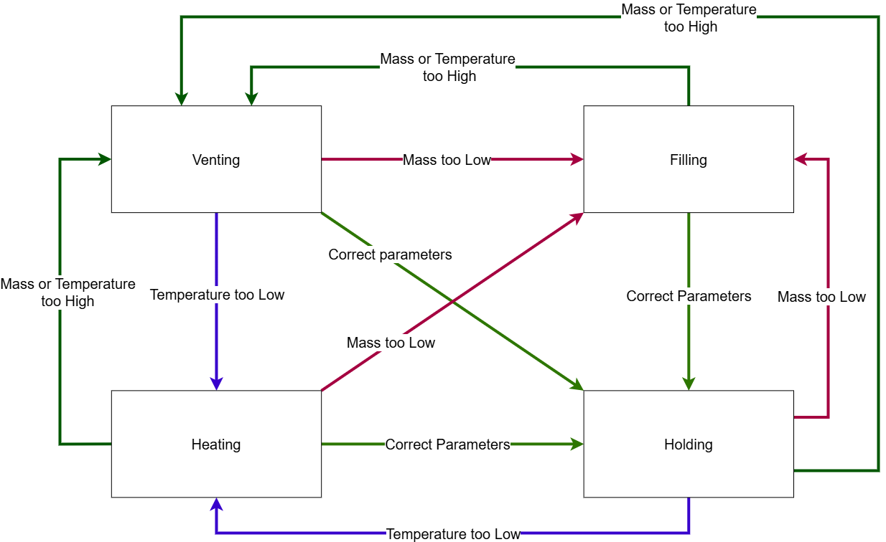
Fill control algorithm
Alogrithm used to manage filling of Solaris MkII.
Hotfire test campaign
This went through an extensive test campaign that spanned two years which resulted in significant improvements to the engine. Each hotfire was either used to test upgrades, test for repeatability or test bug fixes.
Early hotfires characterised the engine and allowed the determination of empirical constants for our simulations. The pilot valve system was implemented part way through the project, I was responsible for managing the members working on this project and both project system level and technical level input to its design.
The campaign culminated in a launch at IREC 2025, becoming the first Australian team to ever launch a hybrid at competition, setting other records along the way such as the first student hybrid L3 launch in Australia.
- Structural interfaces and the thrust path were validated through hydrostatic testing, confirming all loads stayed off the fluid lines.
- Cold gas and hydrostatic campaigns verified valve functionality and structural integrity before each hotfire, building confidence incrementally.
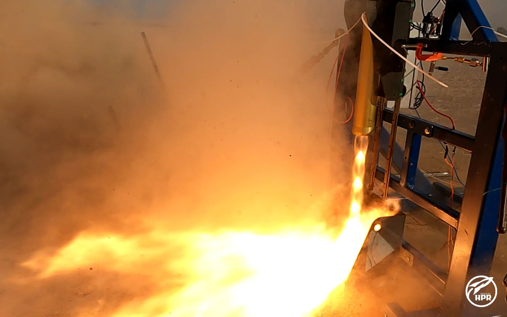
Hotfire test
Engine hotfire on the vertical test stand.
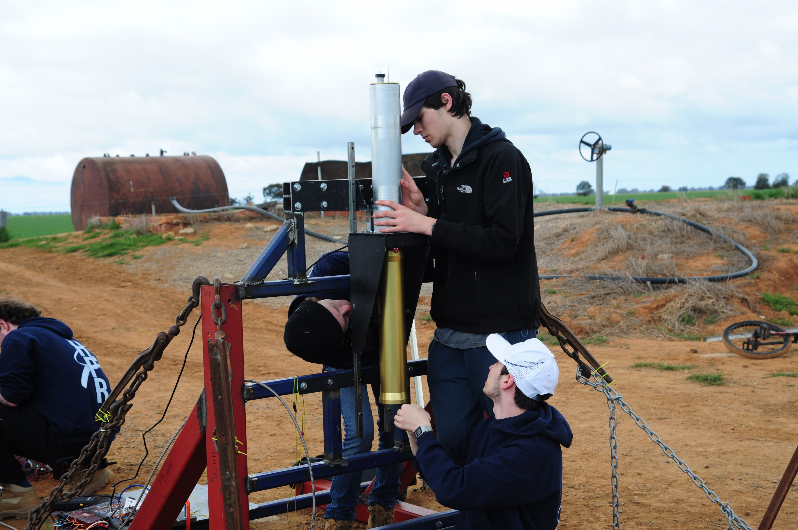
Assembly and iteration
Myself setting Solaris MkII for its first hotfire test.
IREC 2025 launch
IREC 2025 launch for which I was the Propulsion Lead and Launch Operations Lead.

First launch
First launch in Serpentine Australia, I was the Propulsion Lead at the time.
Other moments
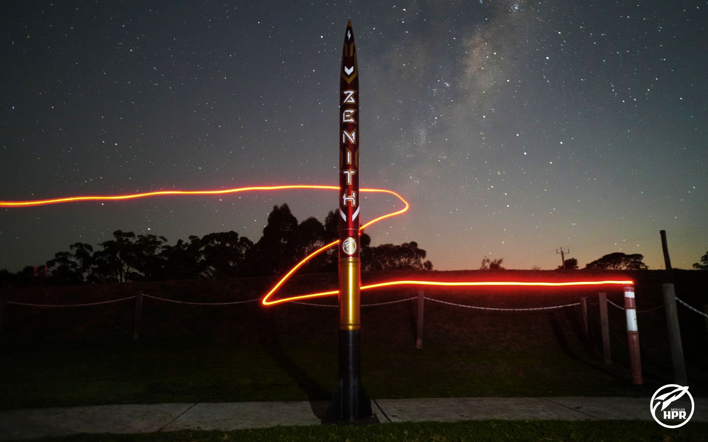
Project Zenith Photoshoot
Project Zenith featuring Solaris MkII with its minimum diameter oxidiser tank.
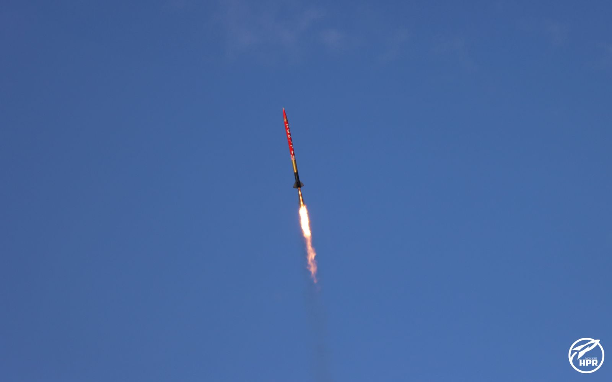
Solaris MkII in Flight
The vehicle during its ascent to 10,000 ft apogee.

Flight Readiness Review
Myself presenting on Solaris MkII during the team's Flight Readiness Review.
Technical documents
- IREC Progress Report 2: Plumbing Diagram
- IREC Progress Report 2: Engine Annotation
- IREC Progress Report 2: Engine Function
- Project Zenith Technical Report: Shortened to Propulsion Section

Project Solaris
A project I spent over two years leading, striving to do something no student team has done in Australia.